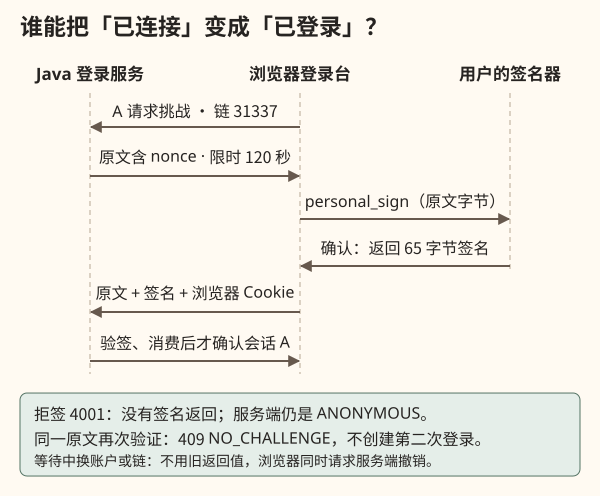

本页目录
先修：02 · 签的是哪些字节、04 · 核对网络、09 · 账户与执行。这里的 EOA 是由私钥控制、可用签名恢复出公钥来验明地址的外部账户。Java 登录服务不收私钥、助记词或钱包文件。读这篇静态课文不会请求连接钱包；需要动手时才启动独立的回环登录台。
先分开三件看起来像「同意」的事
| 操作 | 谁答复、答复什么 | 不能据此做什么 |
|---|---|---|
| 连接 | 用户允许钱包通过 Provider 向这个站点展示账户；eth_requestAccounts 返回地址列表 |
地址是公开标识；知道地址，甚至界面能读到地址，都不是服务端已验身份 |
| 登录 | 用户读完一份专属挑战，钱包用 EOA 的密钥对登录消息签名；Java 验证后把短会话绑定到该地址 | 签名没有隐藏内容，不是转账、代币额度或委托后台代签的许可 |
| 提交交易 | 交易有自己的编码、序号和费用语义，要广播、被执行才可能改变链上状态 | 本课没有这一步，所以不该寻找交易哈希、块号、gas 回执或余额变化 |
Provider 是页面与钱包之间的请求、事件接口，不是私钥，也不一定是一个 HTTP 节点。EIP-1193 的 request({method, params}) 成功给方法结果，失败拒绝 Promise；常见 4001 表示用户拒绝，不是 HTTP 状态码。eth_accounts 只读当前对站点可见的账户，可能是空列表。eth_chainId 给十六进制 quantity：0x7a69 是十进制 31337，0x7a6a 才是 31338。账户列表和网络都可能在页面不刷新时改变；链号也不是独一无二的节点指纹。


核对签名器显示的那张原件
SIWE（Sign-In with Ethereum，ERC-4361）给站点登录约定了可读消息格式。这是一张格式示例，地址和时间只为读图，不是要粘贴给钱包的输入。真实实验应看到当次随机地址、nonce 和 UTC 时间。
http://127.0.0.1:18121 wants you to sign in with your Ethereum account:
0x52908400098527886E0F7030069857D2E4169EE7
Sign in to the local course desk. No transaction.
URI: http://127.0.0.1:18121/
Version: 1
Chain ID: 31337
Nonce: 88d0287435be44878a65df499fb3c631
Issued At: 2026-01-01T10:00:00Z
Expiration Time: 2026-01-01T10:02:00Z
第一行是发起签名的页面 origin：含显式 http、主机、端口；这里不能填签名器自己的 localhost:18221。URI 是登录的资源，本例固定在该站的 /；地址使用 EIP-55 校验大小写。Chain ID 在消息内写十进制，不从签名字节的最后一位猜网络。Nonce 来自服务端 16 个随机字节，编码为 32 个十六进制字符；它区别两次登录挑战，不是第 10 课的交易序号。签名包含这些值而且验证方核对它们，值才有约束力。
以示例时刻计算：10:01:59Z 仍在 [签发, 截止) 内；恰好 10:02:00Z 就不再接受，以 Java 的时钟为准。即使还剩 119 秒，只要已成功消费过这份挑战，也不能再换一次会话。反过来，随机 nonce 并不自带过期能力，过期与消费是两项独立检查。本例的短会话也最迟在这张凭证的截止时间失效，不是从点击确认起另加 120 秒。
从两个回环进程启动，不带上日常钱包
环境：JDK 21，初次准备依赖用 Maven 3.9.x；复用第 17 课的 Maven classpath 和 web3j 4.12.3，浏览器用支持 ES 模块、BigInt 和 window.open 的桌面 Chromium/Chrome。以下命令都从仓库根目录执行。无需 Anvil、账号充值、钱包扩展或公网 RPC。18121、18221 须空闲；若地址被占用，请停止自己的旧实验，不要连接未知服务。
java -version
mvn -version
bash labs/m05/build.sh
# 若本机已缓存完整依赖，可以改用：bash labs/m05/build.sh -o
确保终端使用的都是 JDK 21（macOS 可在每个终端执行 export JAVA_HOME="$(/usr/libexec/java_home -v 21)"; export PATH="$JAVA_HOME/bin:$PATH"）。第一次构建需要下载依赖；labs/m05/target/classpath.txt 就绪后，下面两个服务可离线启动。启动脚本用 JDK 的源码启动器，Java 工作目录是源码旁，勿直接在仓库根目录执行 java SiweLab.java。
# 终端 A：验证方，不生成或持有用户密钥
bash labs/m06/login/run.sh login
# 终端 B：你自己控制的一次性教学签名器
bash labs/m06/login/run.sh signer
等到两个终端分别打印 login http://127.0.0.1:18121/、signer http://localhost:18221/。两者只监听 IPv4 回环，地址栏不要把 localhost 与 127.0.0.1 互换。浏览器另起临时用户资料，关闭同步和常用扩展；不是在已有钱包会话中新开普通标签。可任选与你系统匹配的一条启动方式：
# macOS：在新终端，用空资料目录启动一个新实例
PROFILE=$(mktemp -d)
open -na 'Google Chrome' --args --user-data-dir="$PROFILE" --disable-extensions --disable-sync --no-first-run http://127.0.0.1:18121/
# Linux（已安装 chromium）：同样新建目录，不复用默认配置
PROFILE=$(mktemp -d)
chromium --user-data-dir="$PROFILE" --disable-extensions --disable-sync --no-first-run http://127.0.0.1:18121/
默认路线点 「连接教学签名器」。这是主动打开的独立窗口、不同 origin 和不同 JVM，不是登录台假造的 window.ethereum。签名器启动时在内存创建两个无资金的 secp256k1 测试账户；不会持久化、导入或导出密钥。它只支持本课少数方法，31337/31338 是可切换的教学网络上下文，不宣称查过任何区块。浏览器核对窗口来源和 origin，签名器只对固定登录格式签名。它没有硬件隔离和生产钱包的安全能力，不要部署、共享或存币；整个演练假定本机、课程代码和这份空浏览器资料可信。
可选的产品接口路线：只在另一个全新的专用测试资料中安装你已核验的 EIP-1193 钱包，创建没有资金的测试 EOA，连接你自己的本地链 31337；用登录台的「连接独立测试钱包」。这条路线只运行终端 A，通过 window.ethereum.request 调扩展而非终端 B；若扩展要求在线的自建节点，可按第 04 课准备并核对回环 RPC。没有合适测试扩展就用默认路线，不去探测、解锁或连接已有钱包。本课不要求添加主网，也不在错误网络自动发起切链。
正常记录：谁才是服务端认定的 A？
- 教学签名器的首个请求只展示将披露的地址。点「确认请求」，回登录台：钱包地址有了，链号为
31337，但页头仍是「未登录」。点「检查服务端会话」应读到200 ANONYMOUS。这一刻没有签过消息。 - 点「请求登录签名」。在独立窗口完整读出待签原文；和登录台的原文比对第一行 origin、地址、链号、nonce、时间。不要只看两端地址的前后四位再决定。使用自己刚启动的空签名器，且所有字段相符，才点「确认请求」。
- 回登录台点「检查服务端会话」：预期
200 AUTHENTICATED、本次 A 的完整地址和31337。对照钱包地址时忽略展示大小写差异，不要忽略字节差异。浏览器再开另一份空资料只访问同一登录台并点「检查服务端会话」，应为200 ANONYMOUS。第二个普通标签会共享 Cookie，不是独立浏览器会话的证据。 - 在原资料截止时间之前点「复核一次性消费」：页面把刚才的同一原文和签名再交一次验证；预期
409 NO_CHALLENGE。再查状态仍是上次的 A，不会变成两个会话。这个按钮仅用于本机复核；不会再次弹签名框，也不会延长截止时间。
打开浏览器端和Java 验证服务 / 独立签名器源码，按这四行因果关系读：
- 选地址不等于认地址。
select()只在点击后调用eth_requestAccounts；snapshot()用eth_accounts和eth_chainId读出当前上下文。/api/challenge以浏览器的匿名 Cookie 找到自己的待验证槽，Java 校验链号、规范化地址，从服务端配置而非客户端 URL 拼Challenge.text()。两个浏览器同报 A，有两个槽和两个随机 nonce。 - 传的是原文字节，不是它的十六进制外观。 页面按
TextEncoder得到 UTF-8，再编码成0x…，作为personal_sign的第一个参数，第二个是选定地址。签名器还原原文给人读；实际签名输入按 EIP-191 是0x19开头的Ethereum Signed Message:\n前缀、原文字节数的十进制 ASCII、原文字节，再做 Keccak-256 和 secp256k1 ECDSA。不要手工预加前缀再调用personal_sign（会多包一次），不要对0x…的字符签名。原文换行用 LF，末行无多余换行。 - 真实验签，而不是比较两个页面传来的地址。
/api/verify从同一 Cookie 的槽里重建唯一允许的原文，逐字相同才接着查时间。这样域、URI、链、地址、nonce 与时刻全部绑定；这是只接受本课程固定 SIWE 模板的验法，不是通用 ERC-4361 解析器。signedBy()拆本课 65 字节r || s || v，检查标量和恢复位，Sign.signedPrefixedMessageToKey()据 EIP-191 恢复公钥；取其以太坊地址，与挑战内的地址比较。不需要把私钥发给 Java 来「核验」。 - 发会话与消费是一个状态变更。 同一个
synchronized临界区覆盖读取待用挑战、验签、置pending = null、登记login。同一份证明再来，不论上一次响应是否顺利抵达浏览器，都不能再消费。已认证的服务端状态以HttpOnly; SameSite=Strict的不透明随机 Cookie 关联，业务身份来自槽内的address，不是钱包页头的昵称。本机 API 还校验Host、写请求的Origin；单进程内存锁及 HTTP 回环不是多实例生产部署方案。
换一个输入：哪些等待结果必须丢掉？
每行从连好的测试签名器开始，点「检查服务端会话」读取独立证据。默认只开一个登录台标签和它自己的签名器窗，避免同一资料下的其他标签改动共享会话。
| 改变什么 | 用户动作 | 预期判据 |
|---|---|---|
| 意愿 | 申请新挑战，在签名器点「拒绝请求」 | 登录台显示 4001，服务端 200 ANONYMOUS；不要在后台替用户再请求签名 |
| 账户 | 先以 A 正常登录，在签名器「切换测试账户」到 B；再申请 B 的签名，尚未确认时又切回 A | 两次切换均撤销；读到 ANONYMOUS；即使又看见熟悉的 A，也不是重新证明过的 A |
| 网络 | 在 31337 申请签名，尚未确认就「切换测试网络」到 31338 | 旧请求作废，页面显示错链，不能申请新挑战；切回 31337 只恢复申请资格，不自动登录 |
| 时间 | 开新挑战，在签名窗口保留它直到 Expiration Time 之后，再确认 |
教学签名器可以对旧原文算出真签名，但 Java 必须给 410 EXPIRED，读会话仍为 ANONYMOUS |
若想快些核对时间边界，可只停终端 A，SIWE_TTL_SECONDS=8 bash labs/m06/login/run.sh login 后刷新登录台、重新连接（关闭上一次签名器窗口）。允许值是 5–120 秒；八秒是服务端签发到截止的间隔，不是弹窗渲染完成后倒数八秒。若提示 NO_BROWSER，说明服务端已重启或浏览器匿名槽已失效；清除登录后申请新挑战，别提交旧签名。若连签名器都打不开，检查两个进程的启动行和浏览器对本站的弹窗设置，不要改用陌生 RPC 或粘贴签名来凑过关结果。
等待最容易出现的错误写法是：await sign() 回来后，直接用此刻钱包显示的地址设置「已登录」。这里有两层闸：页面收到 accountsChanged、chainChanged 或 disconnect 时，立即递增代数 epoch、清除展示与待用证明，并通知服务端 /api/reset；提交验证前、验证返回后还要重读钱包快照。即使 A → B → A，旧请求的代数也对不上。页面把发往 Java 的请求串行：若切换发生在已提交 /api/verify 的途中，旧结果不得回填页面，后到的 reset 撤销旧会话。后端不能隔空知道用户刚刚点了哪个账户；网络断开、撤销尚未获服务端确认时，页面应保持未登录，不能声称远端状态已确认。
独立作业：交一份「B 从何时起才算登录」的交班表
改用 45 秒期限重启验证方。先让 A 登录；换 B，验证当前会话；故意拒签一次 B 的请求；然后给 B 申请新的挑战并确认，立刻复核一次性消费。最后用另一份空资料查询。留下六行：动作 / Provider 账户标签 / 链号 / 服务端码与状态 / 是否能以 B 身份办事。另写新旧两张 B 挑战的 nonce 是否相同、各自两条 UTC 时刻相差多少秒；只保存判据和临时地址缩写，不提交 Cookie、原始签名、全量请求捕获、钱包资料或任何密钥。
过关判据： 第一次出现 B 的地址时仍不能以 B 身份办事；拒签的挑战不能建立会话；B 的新挑战 nonce 不同，有效窗恰好 45 秒；只有确认并验签成功那行才首次绑定 B，复核为 409 而不撤掉仍有效的 B。另一份空资料读不到 B。用一句话说明：这套演练只证明特定时刻的 EOA 登录，不证明现实身份、余额、任何代币授权，也不支持合约钱包 ERC-1271 验签。完成后关闭两个浏览器窗口和临时实例；在 A、B 终端各按 Ctrl-C。签名器退出丢弃临时密钥，验证方退出丢弃挑战与会话；确认浏览器已退出后可删除自己刚创建的空资料目录。